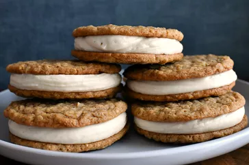

Brown Butter Oatmeal Sandwich Cookies

These brown butter oatmeal sandwich cookies prove
that brown butter makes everything taste better—they
are extra rich and delicious. Pairs of warmly-spiced
oatmeal cookies are filled with a sweet vanilla cream
cheese filling. If you don't have dark corn syrup,
you can swap it out with light corn syrup, molasses,
maple syrup, or even honey.
Ingredients
- 1 cup unsalted butter
- 1 cup firmly packed dark brown sugar
- 1 tablespoon dark corn syrup
- 1 large egg, at room temperature
- 2 teaspoons vanilla extract
- 1 teaspoon vanilla extract
- 1/4 teaspoon salt
Steps
- Place butter in a light colored saucepan over medium heat. Cook, stirring often, until butter has browned and begins to smell nutty, 7 to 10 minutes. Measure out 1/2 cup browned butter and pour into a large mixing bowl to cool to room temperature, 15 to 20 minutes. Reserve remaining browned butter (1/4 to 1/3 cup) for the filling.
- Stir brown sugar and corn syrup into the bowl with cooled brown butter until thoroughly combined; stir in egg and 2 teaspoons vanilla. Add in oats, flour, cinnamon, 3/4 teaspoon salt, nutmeg, baking soda, baking powder, cloves, and allspice and stir until combined.
- Scoop out 2 tablespoons of dough and carefully roll into a ball. Repeat with remaining dough. Place dough balls into the fridge to chill for about 30 minutes.
- Preheat the oven to 350 degrees F (175 degrees C). Line two baking sheets with silicone baking mats or parchment paper.
- Place chilled balls of dough about 3 inches apart on the prepared baking sheets (about 6 dough balls per pan). Bake one pan at a time until cookies begin to turn golden brown on the edges, 10 to 11 minutes. Allow cookies to cool on baking sheet for 10 minutes before removing to a wire rack to cool completely.